🦷 Клинические случаи
-
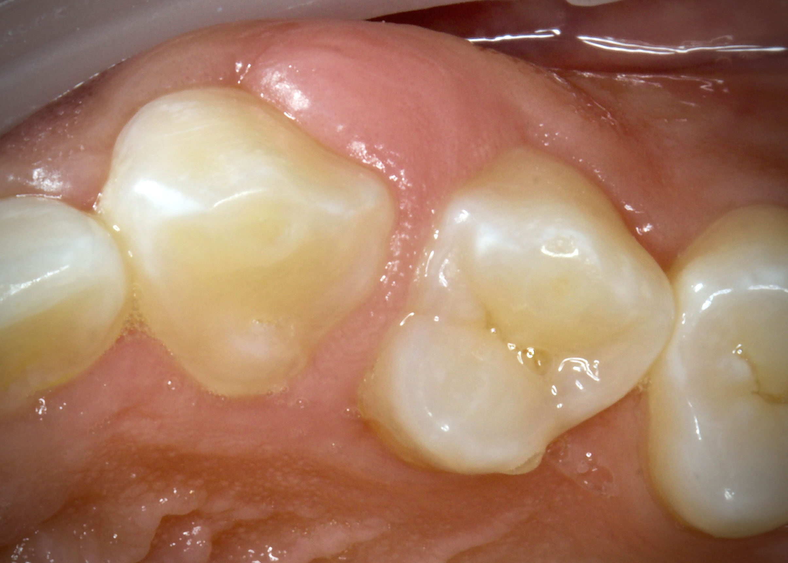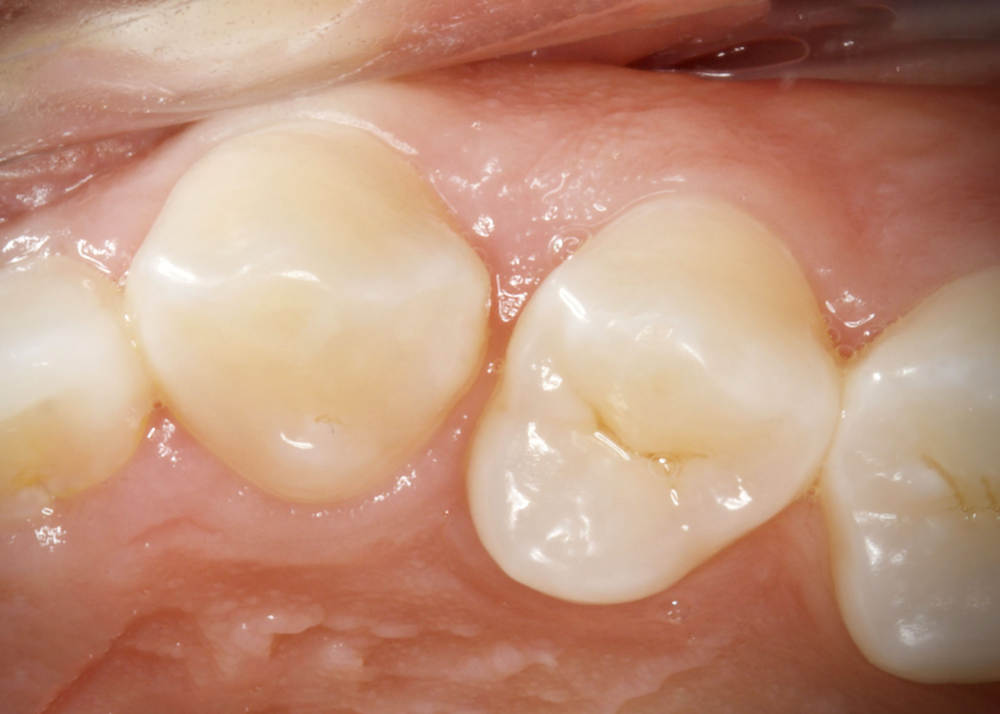
👁️ Когда десна говорит:
«Обрати на меня внимание»Клинический случай удаления эпулиса у молодой пациентки
В ноябре 2022 года в стоматологическую клинику обратилась 25-летняя девушка. Её беспокоило, что между зубами на верхной челюсти слева появился участок десны необычной формы — увеличился межзубной сосочек. Боли не было, но вид вызывала тревогу.
Пациентка рассказала, что впервые заметила это образование около года назад, но тогда оно было маленьким и не мешало. Спустя время, особенно за последние три месяца, оно стало заметно больше. На ощупь — плотное, безболезненное, по цвету — бледно-розовое, напоминало небольшую "шишку". Десна не кровоточила, не воспалялась. Общие жалобы отсутствовали, общее самочувствие — в норме.
🔍 Что показал осмотр?
При осмотре между зубами 2.3 и 2.4 врач обнаружил плотное округлое образование на широкой ножке. Оно не вызывало боли, не кровоточило, выглядело гладким и блестящим. Компьютерная томография показала: под новообразованием началась деструкция костной ткани. Это подтвердило диагноз — фиброзный эпулис .
 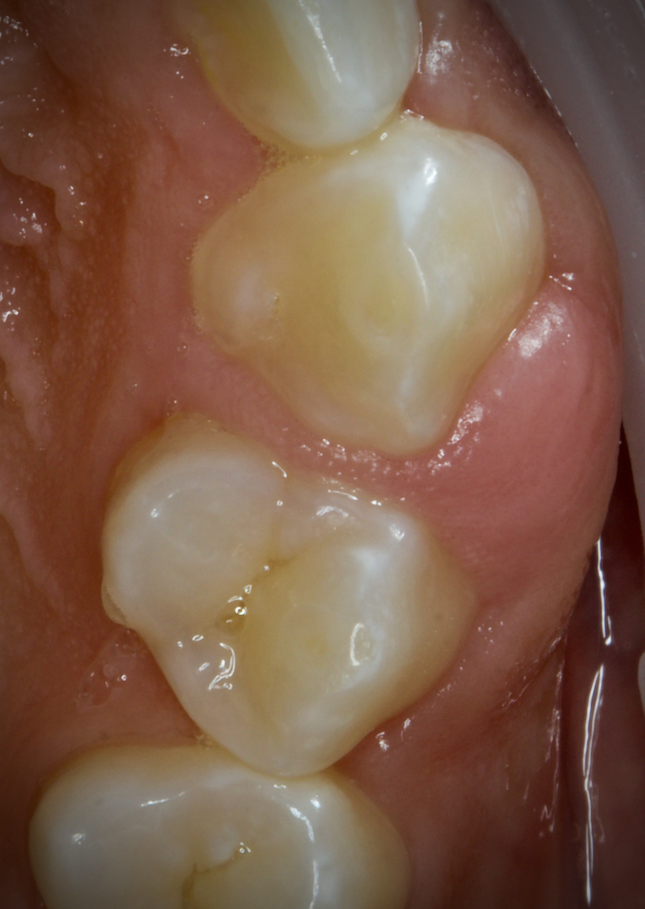
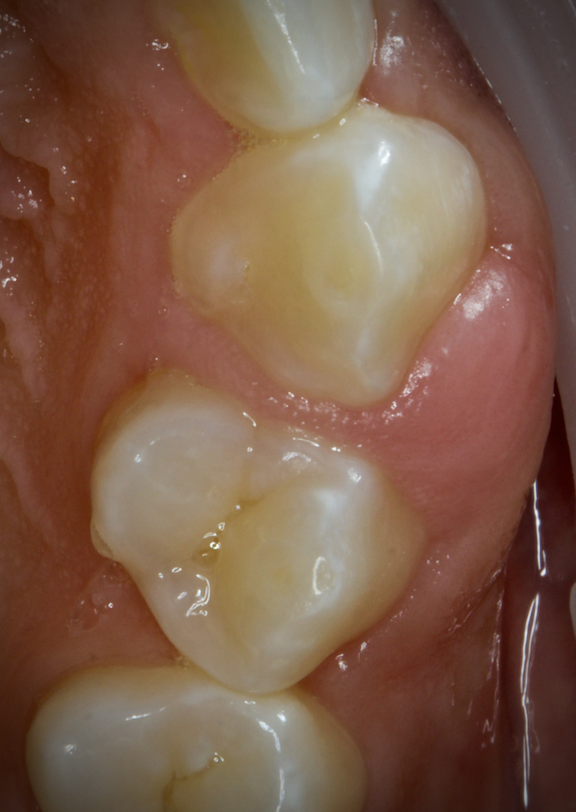
⚕️ Как проходило лечение?
26 ноября 2022 года эпулис был удалён хирургически под местным обезболиванием. Врач аккуратно иссек его у основания, захватив и немного здоровой ткани вокруг, чтобы избежать рецидива. Ранка была ушита.
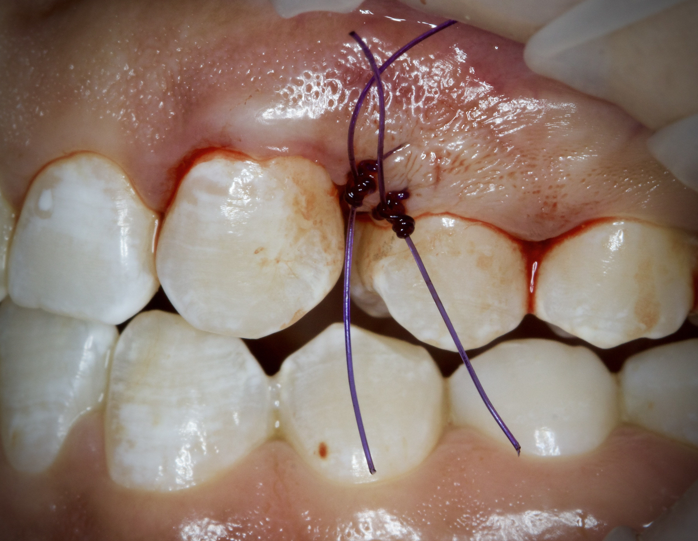 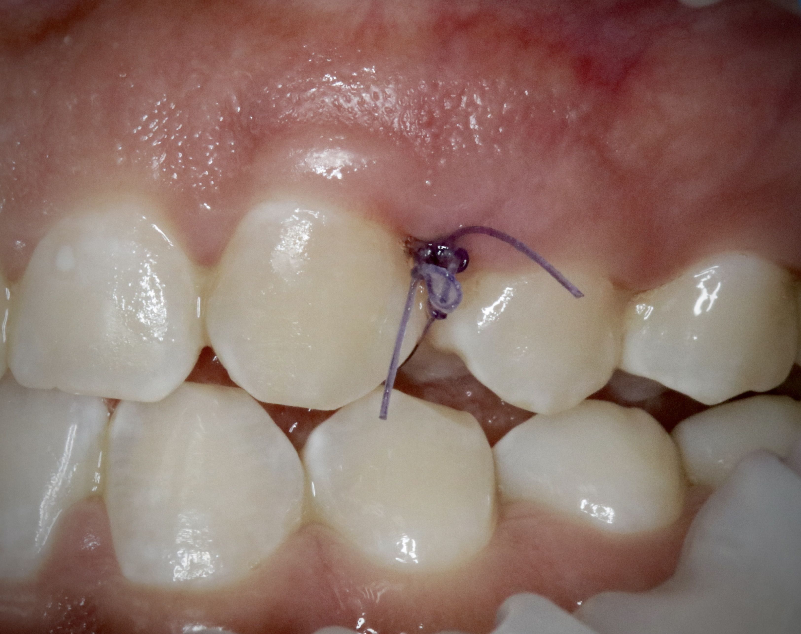 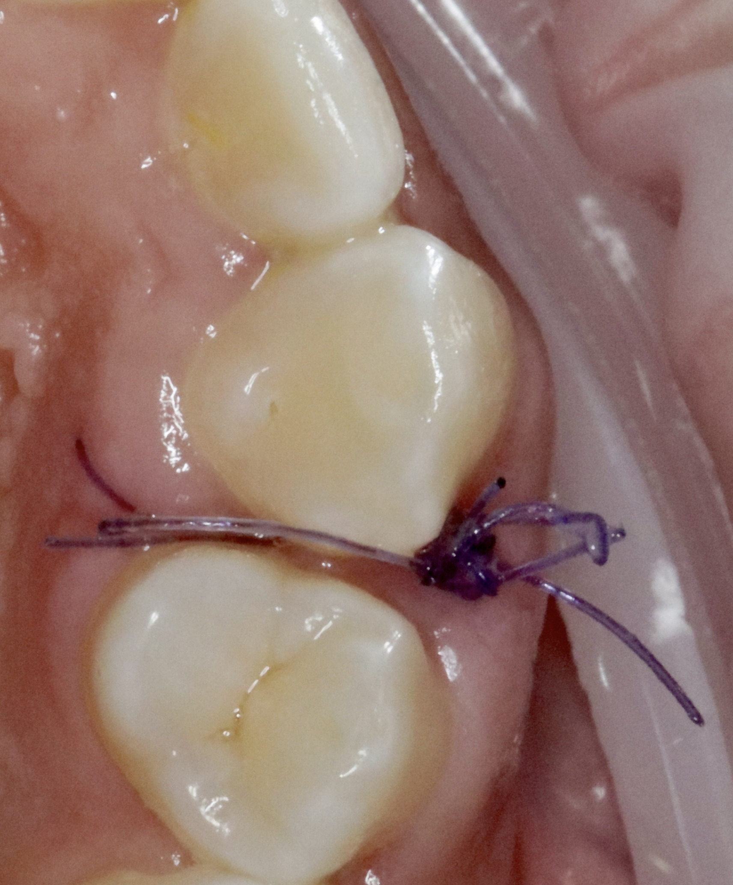Через два дня — лёгкая отёчность, но болей не было. На 10-й день швы сняли, всё заживало спокойно.
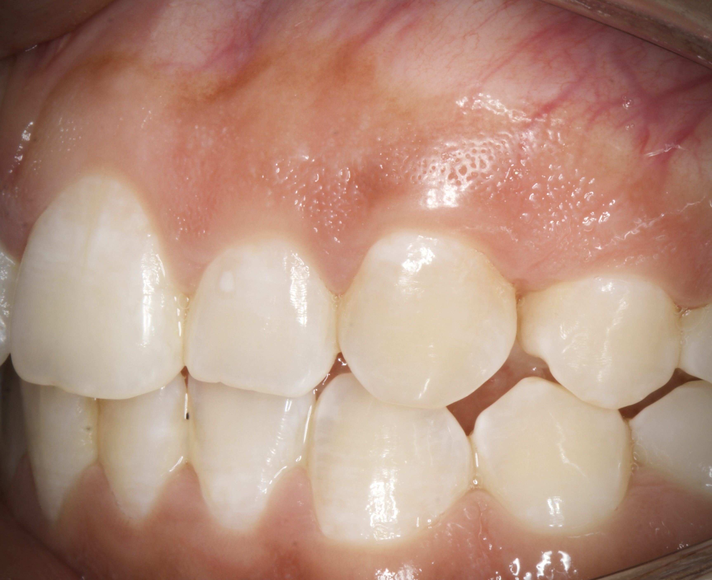 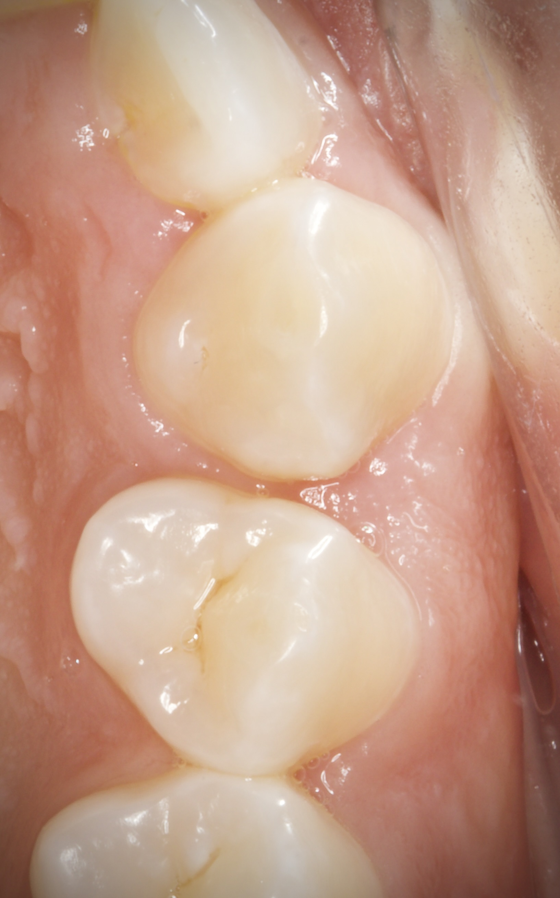✅ Контроль и результат
На контрольном осмотре через три месяца пациентка отметила, что с того времени ничего не беспокоит. Место операции полностью зажило, десна выглядит здоровой, зубы в порядке.
💡 Что важно вынести из этой истории?
Иногда даже безболезненные изменения в десне — это повод обратиться к стоматологу. Чем раньше выявить проблему, тем проще и безопаснее будет лечение. В данном случае всё обошлось без осложнений — благодаря внимательности пациентки и чёткому взаимодействию с врачем.
Лечение таких образований — это всегда совместная работа врача и пациента. Главное — не откладывать визит и доверять специалисту.
-
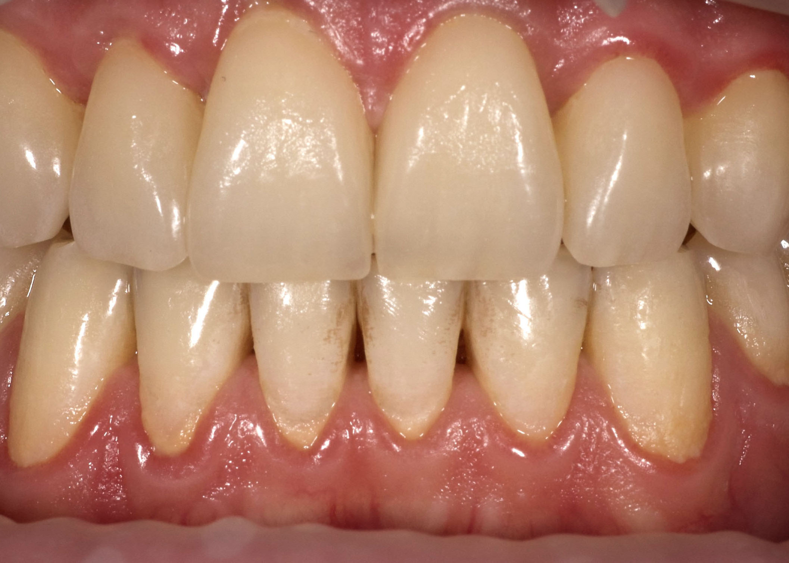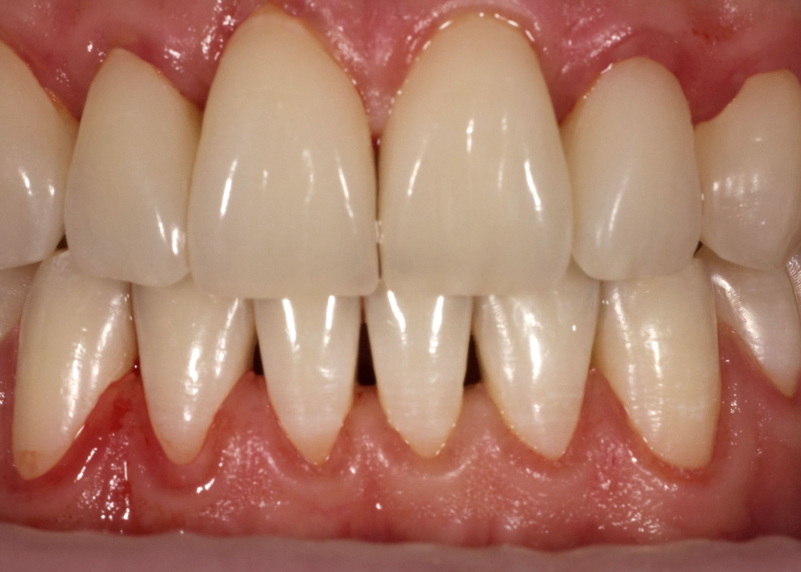
🩸 Гингивит
"Доктор, у меня дёсны кровят… особенно когда ем яблоко. Или просто живу."
Именно с такой жалобой пришёл к нам 32-летний пациент. На дворе — 1 апреля, но, увы, не шутка. Дёсны кровят при чистке зубов, при еде и даже "сами по себе".
🔍 Диагностика
При осмотре: дёсны гиперемированы (красные), отёчные, легко кровоточат при зондировании. На зубах — налёт и поддесневые отложения. Диагноз: хронический катаральный гингивит .
⚕️ Лечение
Назначили комплексную терапия:
- Профессиональная гигиена: удаление над- и поддесневых отложений ультразвуком и Air-Flow.
- Полировка зубов
- Обучение правильной технике чистки
- Рекомендован ирригатор и межзубные ёршики
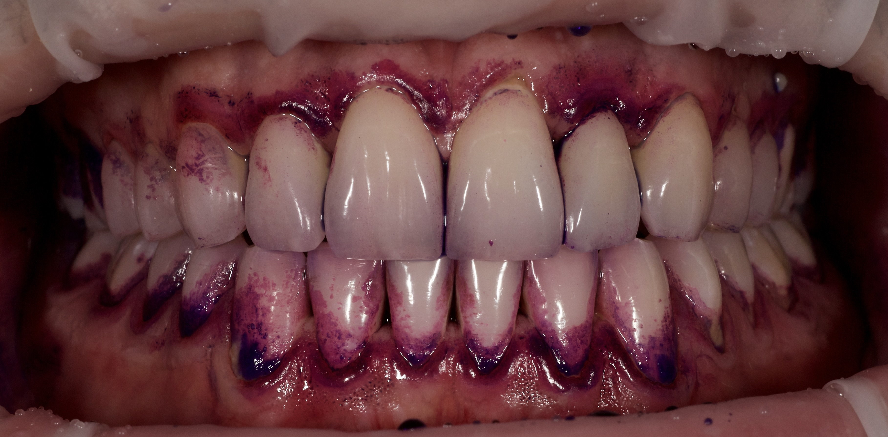✅ Результат через 2 недели
Дёсны стали бледно-розовыми, перестали кровоточить. Пациент отмечает: «Теперь зубы не просто чищу — ухаживаю за ними».
Гингивит — не приговор. Это призыв к действию. А мы — всегда рядом, чтобы помочь. 🤝
-
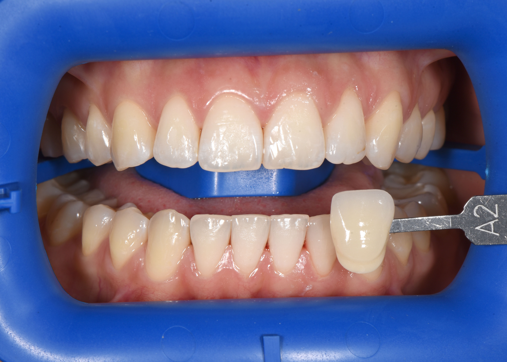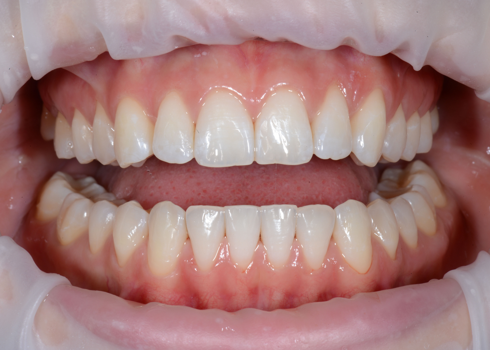
✨ Отбеливание
🌴 Когда улыбке хочется отпуск на Мальдивах
Пациентка обратилась с запросом: "Хочу посветлее. На фото с подругами мои зубы как будто в тени." Раньше не отбеливала, но давно мечтала — без фанатизма, просто красиво.
🔧 Подготовка
Первым делом — профгигиена. Удалили налёт, отполировали, напомнили, как правильно чистить. Отбеливать «по верхам» — как макияж на немытой коже.


⚡ Процедура
Провели клиническое отбеливание системой Zoom 4 — с контролем, без перегрева, с заботой.
✅ Результат через 14 дней

Улыбка посвежела, осветлилась, но осталась естественной. Никакой «белизны унитаза» — только ухоженный, дорогой эффект.
Пациентка довольна, зеркала радуются, подруги в восторге. А мы — за то, чтобы красота была с умом. 💫
-
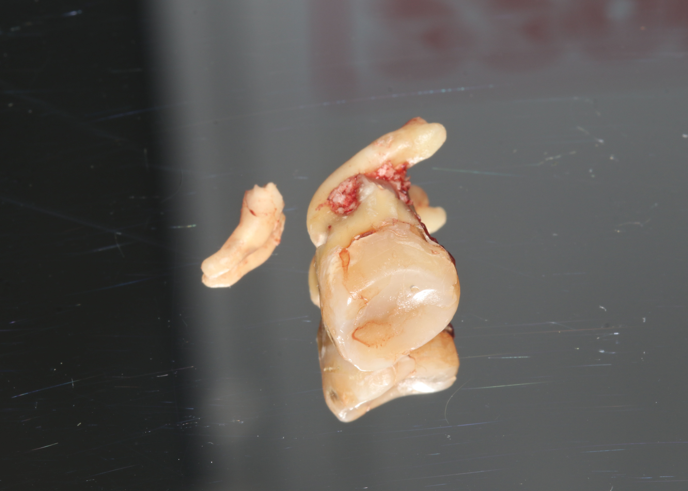
⚡ Удаление зуба
"Доктор, болит зуб... но как-то особенно: будто он вырос и теперь мстит."
Так к нам пришёл пациент с ноющей, пульсирующей болью справа внизу. Болит уже три дня. Трое суток страданий и надежд, что "само пройдёт". Не прошло.
🔍 Диагностика
При осмотре: зуб 4.8 — глубокая пломба, боль при постукивании. На рентгене — апикальная гранулема. Диагноз: хронический периодонтит .
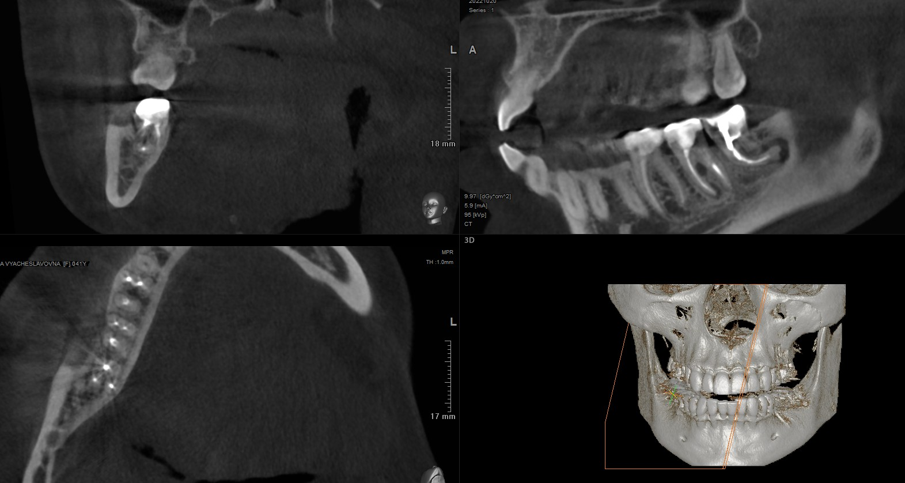
⚕️ Лечение
Провели удаление по всем правилам:
- Анестезия — без боли 💉
- Хирургический доступ — аккуратно 🔪
- Кюретаж лунки — чисто 🧼
- Наложение швов — для быстрого заживления 🪡
Пациент в кресле не плакал — и даже пошутил. Это всегда добрый знак 😄
📋 Рекомендации
- Не есть 4 часа после приёма 🍽️
- Горячее, бани, спорт — отложить 🚫
- Курить — категорически нельзя 🚭
- Жевать — на здоровой стороне 👄
Швы снимаем через 14 дней. Контрольный осмотр — обязательно.
Хронический воспалительный процесс ликвидирован. Пациент доволен, боль ушла. ✅
-


Гигиена 🪥
"Доктор, я чищу зубы, но они как-то не чистятся…"
Пришёл молодой человек — 15 лет. Глаза честные: "ну я правда чищу… иногда" . Иногда — это два раза в неделю. 😅
🎨 Индикатор налёта
Нанесли индикатор — и картина вышла как с выставки современного искусства: сине-буро-малиновые пятна.


📚 Обучение
Показали правильную технику: угол наклона щётки, движения, межзубная чистка. Сначала хихикал, потом стало интересно. 🎓
✅ Результат
Убрали налёт, отполировали. Пациент ушёл с пониманием: "если не получится — снова покажете" .
Терпение и труд — всё перетрут. А я помогу. 💪
-
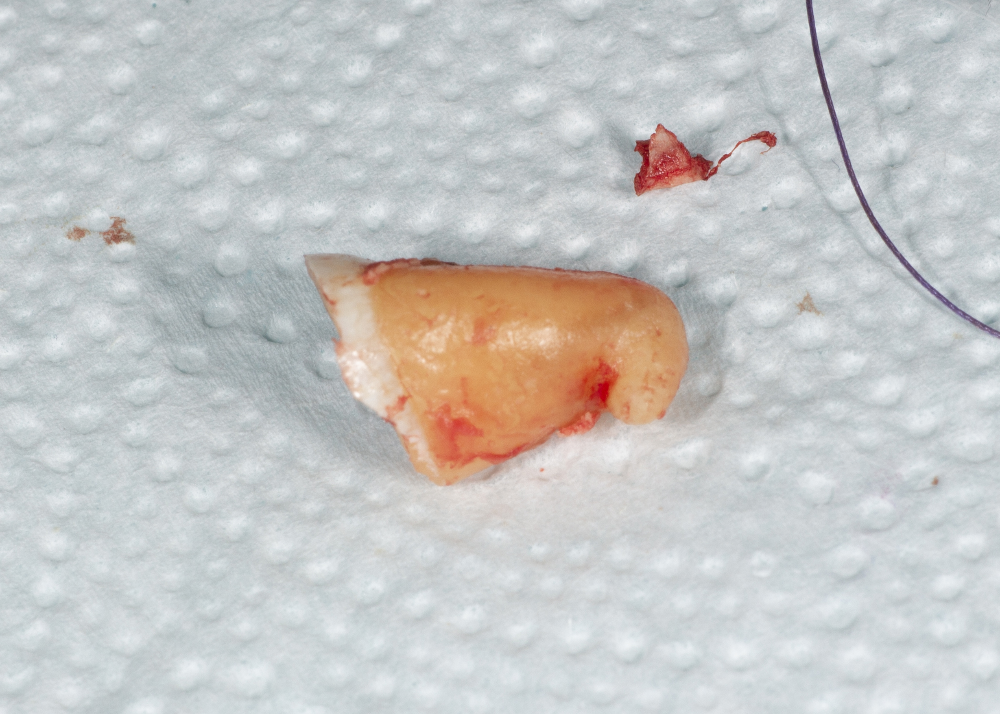
🦷⚡ Удаление зуба
"Доктор, зуб ноет… особенно когда я ем или просто живу"
Пациент обратился с ноющей болью в зубе 4.8 (нижний правый "восьмёрка"). Боль усиливалась при жевании, тревожила ночью. 🌙
🔍 Диагностика
При осмотре: глубокая кариозная полость, размягчённый дентин, боль при постукивании. На рентгене — пустые корневые каналы, признаки хронического апикального периодонтита.
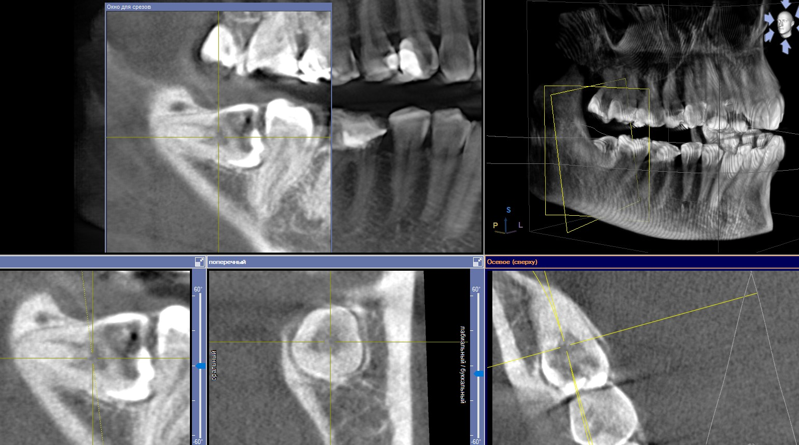⚕️ Лечение
Провели удаление под анестезией: аккуратно, без лишнего давления. Выполнили кюретаж лунки, обработали антисептиком, наложили швы. 🩹
📋 Рекомендации
- Принимать Нимесил при боли 💊
- Щадящая диета: мягкая, не горячая пища 🍲
- Не полоскать рот — чтобы не нарушить сгусток 🚫
- Отказ от курения, бани, сауны и физических нагрузок 🚭🏋️
Пациент держался молодцом, даже пошутил. 😄
Жизнь коротка, а зубы должны быть крепкими. Если болит — не ждите. ⏰
-
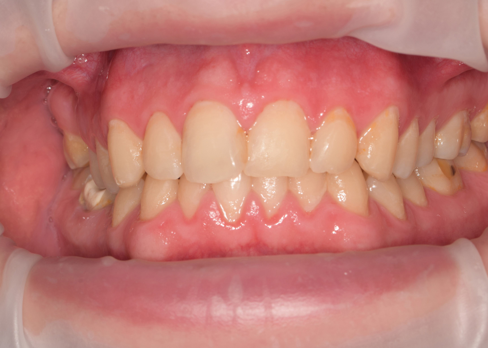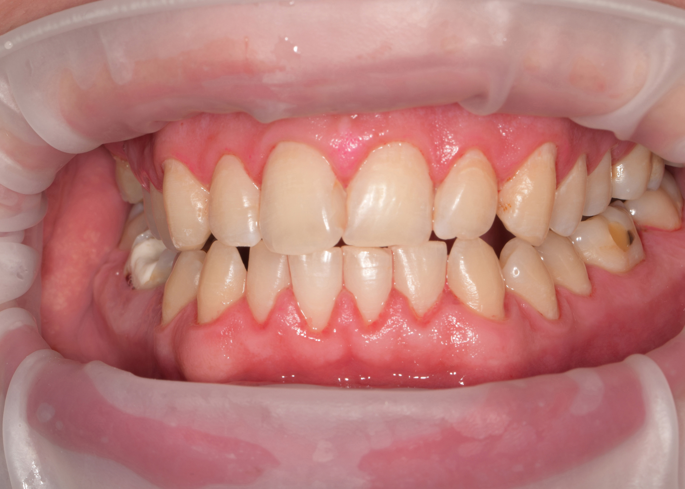
🛡️✨ Профилактика: магия чистоты
"Мои феи-ортодонты и магия профилактики" 🧚♀️
У меня есть особенная команда — мои феи-ортодонты 🌸. Они строго следят: "Раз в три месяца — к пародонтологу. И точка." 📅
❓ Почему профилактика?
Пациенты приходят уверенные: "Я чищу щёткой, ёршиками, ирригатором. Посмотрите, как они блестят!" ✨
Но… беру индикатор налёта — и вуаля: налёт в межзубных промежутках, у края десны, в "слепых зонах". 🎨
🎓 Обучение и чистка
Спокойно, без лекций: показываем, где ошибка, учим правильно чистить. Потом — профессиональная гигиена: убираем налёт, полируем. 🪥
✅ Результат
Зубы сияют. Пациент понимает: проще приходить раз в три месяца, чем потом бороться с воспалением. 💎
Мы договариваемся: "Если что — я здесь. Снова покажу, снова научу." 🤝
Профилактика — это не роскошь. Это забота. 💖
-
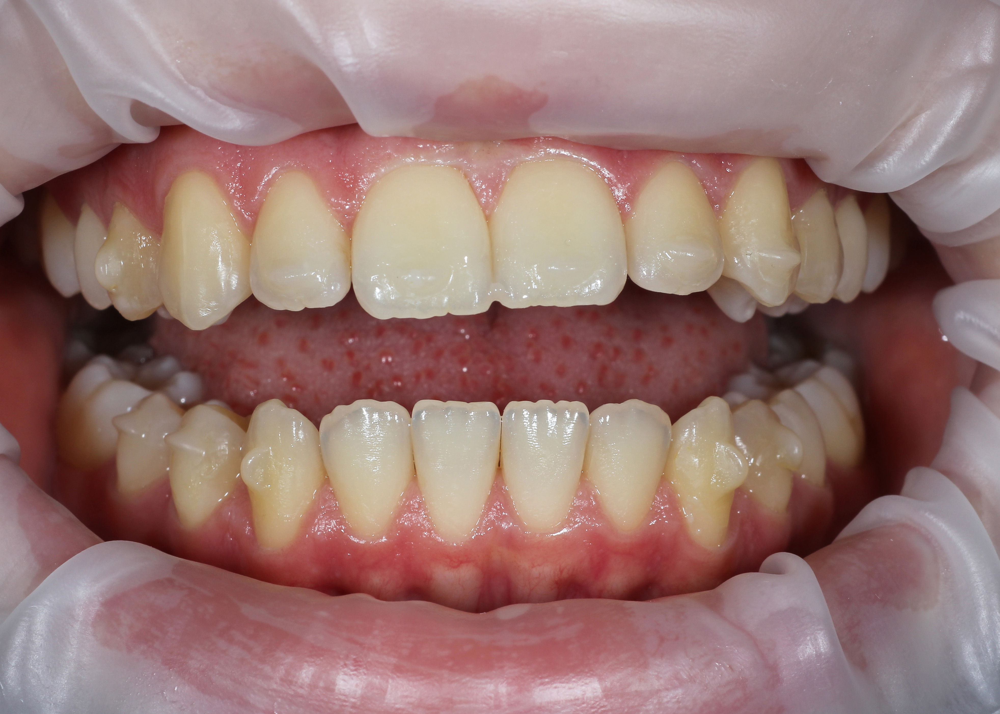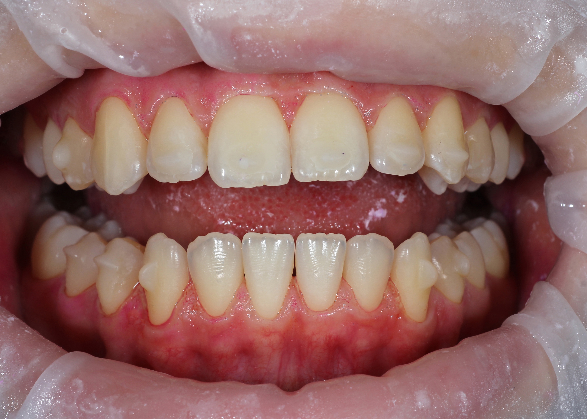
🛡️🌟 Профилактика: феи-ортодонты и забота
"Феи-ортодонты и магия чистоты" 🧚♀️✨
Мои феи-ортодонты снова привели пациентов: "Доктор, покажите, научите. Они чистят, но нам всё равно волнительно!" 😅
🔍 Индикатор — зеркало правды
Наносим индикатор — и видим: налёт в труднодоступных зонах. Пациенты смотрят в зеркало: "Ого… это у меня каждый день?" 🤯
🎓 Обучение
Учим держать щётку под углом, делать плавные движения, не "пилить", а массировать. Ёршики — не для красоты, а для дела. 🪥
✨ Чистка и результат
После гигиены зубы сияют. Пациенты уходят с пониманием: "Надо не просто чистить, а чистить правильно." 💡
Профилактика — это не просто слово. Это забота. 💖🚀
-
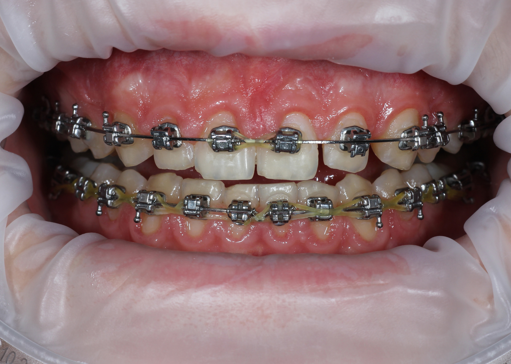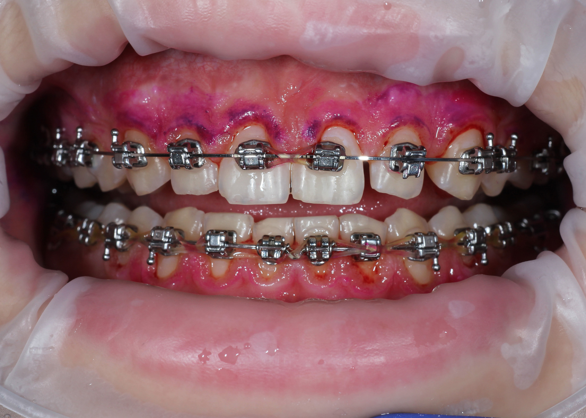
✨🦷 Отбеливание: улыбка мечты
"Доктор, хочу, чтобы улыбка светилась!" 🌟
Пациентка давно мечтала об отбеливании. Без фанатизма — просто красиво, естественно. 💫
🔧 Подготовка
Сначала — профгигиена. Нельзя отбеливать грязные зубы. Убрали налёт, отполировали. 🧼
⚡ Процедура
Провели отбеливание системой Zoom 4 — под контролем, без перегрева, с капелькой перфекционизма. ⚗️
✅ Результат
Через 14 дней — улыбка посвежела, но не стала "искусственной". Никакой "белизны унитаза" — только ухоженный, естественный свет. 💎
Пациентка в восторге. Подруги — тоже. А мы — за красоту с умом. 😉